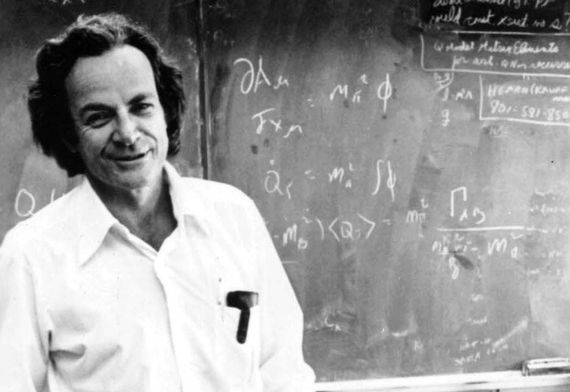

Richard P. Feynman
If that's the world's smartest man, God help us.

Richard Feynman enseñando en la Unversidad de Cornell.
- In 1918 Richard Phillips Feynman is born in Queens, NY.
- When Feynman was 15, he taught himself trigonometry, advanced algebra, infinite series, analytic geometry, and both differential and integral calculus. Before entering college, he was experimenting with and deriving mathematical topics such as the half-derivative using his own notation. He created special symbols for logarithm, sine, cosine and tangent functions so they did not look like three variables multiplied together, and for the derivative, to remove the temptation of canceling out the d's.
- He attended to MIT where he originally majored in mathematics, he later switched to electrical engineering, as he considered mathematics to be too abstract. Noticing that he "had gone too far," he then switched to physics, which he claimed was "somewhere in between."
- He did his graduate and Ph.D studies in Princeton. Attendees at Feynman's first seminar, which was on the classical version of the Wheeler-Feynman absorber theory, included Albert Einstein, Wolfgang Pauli, and John von Neumann.
- In his doctoral thesis titled "The Principle of Least Action in Quantum Mechanics," Feynman applied the principle of stationary action to problems of quantum mechanics, inspired by a desire to quantize the Wheeler–Feynman absorber theory of electrodynamics, and laid the groundwork for the path integral formulation and Feynman diagrams. A key insight was that positrons behaved like electrons moving backwards in time.
- Feynman worked for the Manhattan Project. He amused himself by cracking locks. He claimed to be the only person to see the Trinity nuclear test explosion without the very dark glasses or welder's lenses provided, reasoning that it was safe to look through a truck windshield, as it would screen out the harmful ultraviolet radiation.
- One of the conditions of Feynman's scholarship to Princeton was that he could not be married; nevertheless, he continued to see his high school sweetheart, Arline Greenbaum, and was determined to marry her once he had been awarded his Ph.D. despite the knowledge that she was seriously ill with tuberculosis. This was an incurable disease at the time, and she was not expected to live more than two years. On June 29, 1942, they took the ferry to Staten Island, where they were married in the city office. The ceremony was attended by neither family nor friends and was witnessed by a pair of strangers. Feynman could only kiss Arline on the cheek. After the ceremony he took her to Deborah Hospital, where he visited her on weekends
- For contributions to the development of quantum electrodynamics, Feynman received the Nobel Prize in Physics in 1965 jointly with Julian Schwinger and Shin'ichirō Tomonaga.
- Feynman was a teacher in Caltech where he gave a great course in introductory physics which was then turn into The Feynman Lectures on Physics
- Feynman died on February 15, 1988, at age 69. His last words were: "I'd hate to die twice. It's so boring."